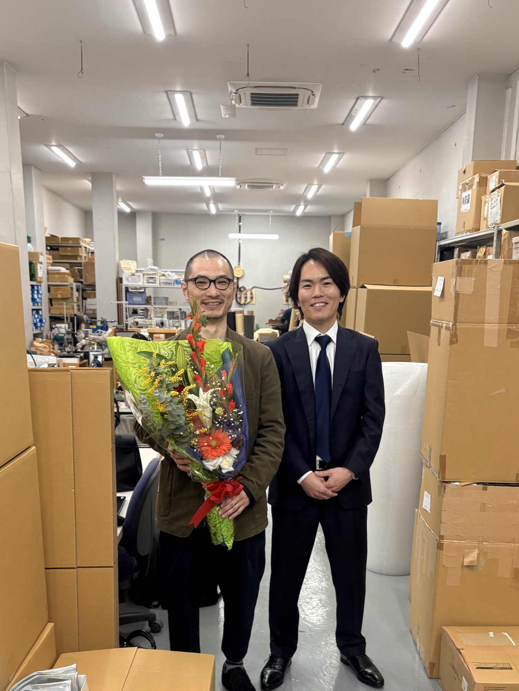

BUSINESS 03 — SMB INVESTMENT
譲り受けた会社を、永続して保有します。
日本には、長い年月をかけて磨かれた技術や、地域に根づいた顧客を持つ中小企業が数多くあります。その多くが、後継者が見つからないという課題を抱えています。
B supplyは、自己資金と借入で中小企業の株式や事業を譲り受けます。社名やブランド、雇用、取引先との関係は守り、承継した会社は売却せず、永続して保有します。
OUR POSITION
会社を残す、もう一つの選択肢
会社を次の世代へつなぐとき、選択肢は事業会社やファンドへの譲渡だけではありません。
B supply
事業会社
ファンド
保有期間
永続して保有
長期で保有することが多い
数年後の売却が前提のことが多い
社名・ブランド・雇用
維持する
統合されることがある
方針による
承継後の経営
取締役1名が経営に入る
親会社の方針で運営
経営陣を送り込む
成長の手段
営業・マーケティング・AIの実務を自社で持つ
親会社の販路を使う
資金と管理体制を提供
※ 事業会社・ファンドは一般的な傾向です。個々の方針により異なります。
OVERVIEW
中小企業投資の概要
大企業
中堅企業
中小企業
336.5万者（全体の99.7%）
B supplyの投資領域
売上1億円以上50億円未満
- 投資対象
- 全国の、売上1億円以上50億円未満の製造業・小売業・建設業
- 経営体制
- 1件につき、B supplyから1名が取締役として経営に入ります
- 保有期間
- 期限を設けず、永続して保有します
- 投資資金
- 自己資金と金融機関からの借入
- 経営支援
- B4D Programで、需要の発掘から取引の創出、業務の最適化まで担います
B4D PROGRAM
承継した会社を、4つの力で伸ばします
B supplyが自ら経営に入り、グループの力を使って、受け継いだ会社の成長をつくります。
B4D
Program
- 01
Demand Hack
需要を発掘する
承継する企業が持つ技術、歴史、顧客基盤と、B supplyグループのアセットを掛け合わせ、新しい市場や需要を発掘します。
- 02
Design Upgrade
価値をアップデートし、発信する
製品、Webサイト、アプリ、空間などのデザイン変革に加え、その会社が持つ優位性や存在価値を、より良い形にアップデートし、社会に発信します。
- 03
Deal Boost
新たな取引を生み出す
承継後にB supplyが新規営業・アライアンス営業・業務提携などを主導し、新たな取引と売上を生み出します。
- 04
Digital Optimization
事業を最適化する
デジタル・テクノロジーを活用し、製品、サービス、業務プロセス、ワークフローなどを、より効率的かつ効果的な状態に改善します。
WHAT WE LOOK FOR
このような会社からのご相談をお待ちしています
すべてに当てはまる必要はありません。一つでも近いと感じたら、お話をお聞かせください。
- CRAFT
日本の伝統・文化・技術を受け継ぐ、ものづくりの会社
- BRAND
長く支持されてきた商品やブランドを持つ会社
- SUCCESSION
後継者が見つからず、事業の引き継ぎ先を探している会社
- TRUST
地域や業界の中で、確かな信頼を築いてきた会社

CASE 01
東京・墨田区の革製造工房を承継しました
2026年3月、東京・墨田区で1966年から続く革製造工房を承継しました。職人の技術と雇用を引き継ぎ、営業とデジタル活用によって事業の成長に取り組んでいます。
革製品OEM事業を見る- 1966
東京都墨田区で創業
- 1966–2026
ブランド各社の革製品を製造
- 2026.3
B supplyが事業を承継
OUR BUSINESS
B supplyの事業のつながり
B supplyは、お客様の会社を支える事業と、自ら受け継いだ会社を経営する事業の両方を手がけています。
自社の経営で得た経験を、お客様の支援に生かします